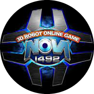

|  |
Nova 1492장르: RTS등급: 전체 이용가플랫폼: PC |
| 태양광 발전 | 메탈리언 |
|---|---|
| H-Zone | 신세계의 신 |
2011년 4월 22일자로 서비스 종료. 2011년 9월 19일 프리 서버 부활
이때 임시적으로 사이트가 있었는데, 매우 조잡해서 계정 생성만 만들어주고 게임 다운로드 정도만 가능했다. 이후 부활. 아라마루 관계자가 노바 1492의 판권을 매각하였으며, 이는 부활의 초석이 될 것이라 하였다. 부활했을 때는 레벨에 관계없이 모든 부품을 써볼 수 있었지만, 퀘스트 모드는 부활되지 않았다. 그래서 퀘스트 모드를 기대하고 들어왔던 유저들은 몇번 해보고 다시 안 하게 된다.